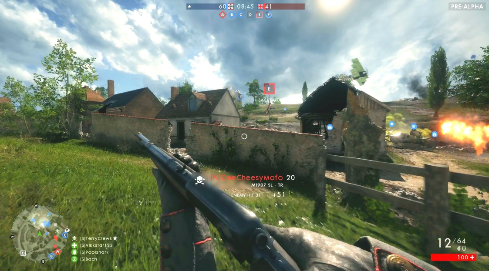
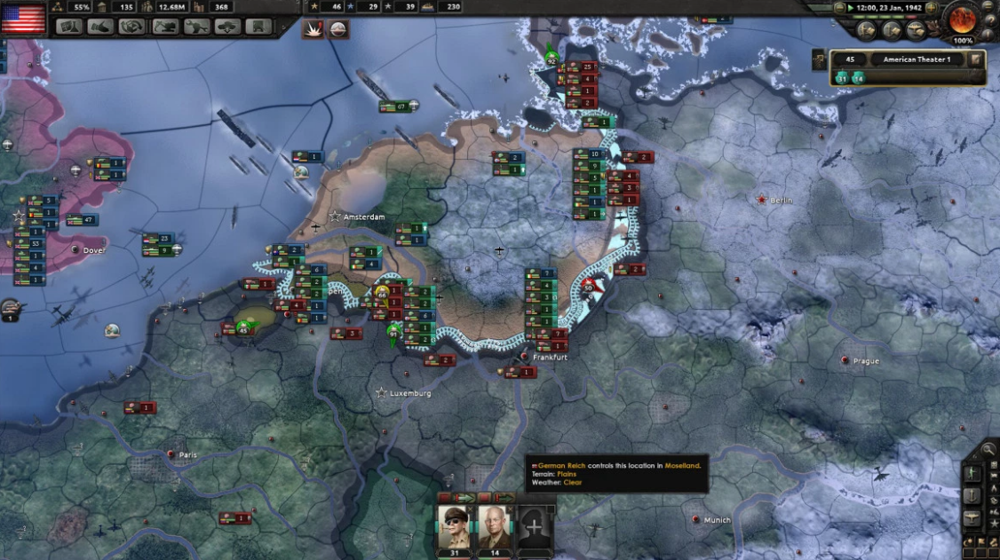

There are a lot of games and gaming platforms to review or give an idea if a game has good gameplay that would be released later this year. However in this section of the website we will only discuss two games that have been released or newly updated.
Battlefield 1 which was developed by Electronic Arts (EA) and was released on the 21st of October 2016. This game is a first person shooter game which is set in the World War 1 battlefield. It features a single player campaign and a multiplayer mode. The single player campaign is set on the Western Front (Western Europe), Gallipoli, in the air, Northern Italy and Arabia.
The multiplayer mode takes place on a number of maps for example in an urban environment and in the desert. The multiplayer mode is the most popular as players go up against other players, players can also use equipment that might be exclusive to multiplayer only.
The game has a good game mechanic so you can enjoy the gaming exprience within the depths of chaos during World War 1. A game like Battlefield 1 has been achieved only as a multiplayer game, this game is Verdun. Battlefield 1 has good gameplay and graphics which is essential for the audience to purchase the game. The user interface is similar to other Battlefield games but have a new look than older ones.
This image taken from a multiplayer game.
Hearts of Iron 4 which was developed by Paradox Interactive and was released on the 6th of June 2016. The game is a strategy game which is set in 1936 (onset of World War 2). The game has no end date where you can play past the year of 1948 which is the year where the items you research within the game ends. The game features both a single player mode and a multiplayer mode. In both modes you pick a country from the start date of 1936 or in 1939.
In the single player mode it includes a feature which is Ironman mode where achievements can be unlocked but can't use in-game cheats and any modifications downloaded. In the multiplayer mode this feature is visible but cannot be enabled due to playing with other players. Multiplayer mode can have a maximum of 20 players, More than one player can be playing as the same country within multiplayer.
The gameplay is good as it allows you to control the military units that you have and can become democratic, communist, fascist or neutral to achieve world domination. The game is compatiable with any modifications to the game to have more features to the game or to play as a country that never existed in 1936/ 1939. The gaming community who have purchased Hearts of Iron 4 wanted a better user interface since Hearts of Iron 3. Paradox Interactive took this into cosideration to develop a much more adaptive interface and gameplay included it into Hearts of Iron 4 to make it easier to play and quickier to adapt to the gameplay.
This is an in-game image.